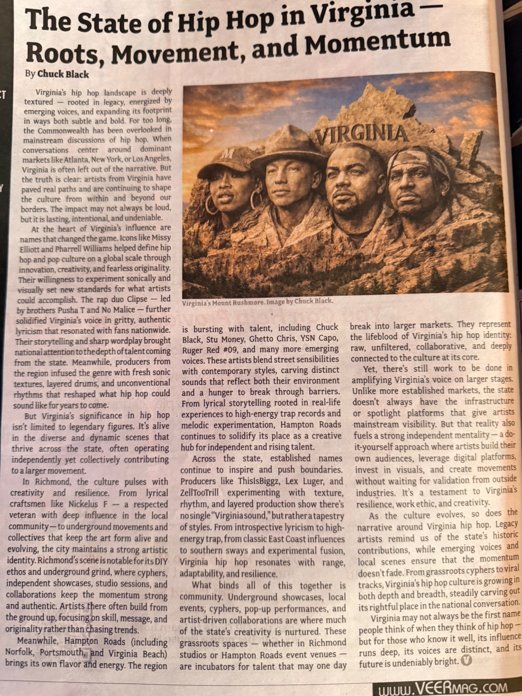

The State of Hip Hop in Virginia — Roots, Movement, and Momentum
A look at Virginia hip-hop’s influential legacy, grassroots scenes and independent future.

Read the Full Article
Virginia’s hip hop landscape is deeply textured — rooted in legacy, energized by emerging voices, and expanding its footprint in ways both subtle and bold. For too long, the Commonwealth has been overlooked in mainstream discussions of hip hop. When conversations center around dominant markets like Atlanta, New York, or Los Angeles, Virginia is often left out of the narrative. But the truth is clear: artists from Virginia have paved real paths and are continuing to shape the culture from within and beyond our borders. The impact may not always be loud, but it is lasting, intentional, and undeniable.
At the heart of Virginia’s influence are names that changed the game. Icons like Missy Elliott and Pharrell Williams helped define hip hop and pop culture on a global scale through innovation, creativity, and fearless originality. Their willingness to experiment sonically and visually set new standards for what artists could accomplish. The rap duo Clipse — led by brothers Pusha T and No Malice — further solidified Virginia’s voice in gritty, authentic lyricism that resonated with fans nationwide. Their storytelling and sharp wordplay brought national attention to the depth of talent coming from the state. Meanwhile, producers from the region infused the genre with fresh sonic textures, layered drums, and unconventional rhythms that reshaped what hip hop could sound like for years to come.
But Virginia’s significance in hip hop isn’t limited to legendary figures. It’s alive in the diverse and dynamic scenes that thrive across the state, often operating independently yet collectively contributing to a larger movement.
In Richmond, the culture pulses with creativity and resilience. From lyrical craftsmen like Nickelus F — a respected veteran with deep influence in the local community — to underground movements and collectives that keep the art form alive and evolving, the city maintains a strong artistic identity. Richmond’s scene is notable for its DIY ethos and underground grind, where cyphers, independent showcases, studio sessions, and collaborations keep the momentum strong and authentic. Artists there often build from the ground up, focusing on skill, message, and originality rather than chasing trends.
Meanwhile, Hampton Roads (including Norfolk, Portsmouth, and Virginia Beach) brings its own flavor and energy. The region is bursting with talent, including Chuck Black, Stu Money, Ghetto Chris, YSN Capo, Ruger Red #09, and many more emerging voices. These artists blend street sensibilities with contemporary styles, carving distinct sounds that reflect both their environment and a hunger to break through barriers. From lyrical storytelling rooted in real-life experiences to high-energy trap records and melodic experimentation, Hampton Roads continues to solidify its place as a creative hub for independent and rising talent.
Across the state, established names continue to inspire and push boundaries. Producers like ThisIsBiggz, Lex Luger, and ZellTooTrill experimenting with texture, rhythm, and layered production show there’s no single “Virginia sound,” but rather a tapestry of styles. From introspective lyricism to high-energy trap, from classic East Coast influences to southern sways and experimental fusion, Virginia hip hop resonates with range, adaptability, and resilience.
What binds all of this together is community. Underground showcases, local events, cyphers, pop-up performances, and artist-driven collaborations are where much of the state’s creativity is nurtured. These grassroots spaces — whether in Richmond studios or Hampton Roads event venues — are incubators for talent that may one day break into larger markets. They represent the lifeblood of Virginia’s hip hop identity: raw, unfiltered, collaborative, and deeply connected to the culture at its core.
Yet, there’s still work to be done in amplifying Virginia’s voice on larger stages. Unlike more established markets, the state doesn’t always have the infrastructure or spotlight platforms that give artists mainstream visibility. But that reality also fuels a strong independent mentality — a do-it-yourself approach where artists build their own audiences, leverage digital platforms, invest in visuals, and create movements without waiting for validation from outside industries. It’s a testament to Virginia’s resilience, work ethic, and creativity.
As the culture evolves, so does the narrative around Virginia hip hop. Legacy artists remind us of the state’s historic contributions, while emerging voices and local scenes ensure that the momentum doesn’t fade. From grassroots cyphers to viral tracks, Virginia’s hip hop culture is growing in both depth and breadth, steadily carving out its rightful place in the national conversation.
Virginia may not always be the first name people think of when they think of hip hop — but for those who know it well, its influence runs deep, its voices are distinct, and its future is undeniably bright.
As Published in VEER Magazine
Photograph of the original printed article, including the byline and magazine layout.
